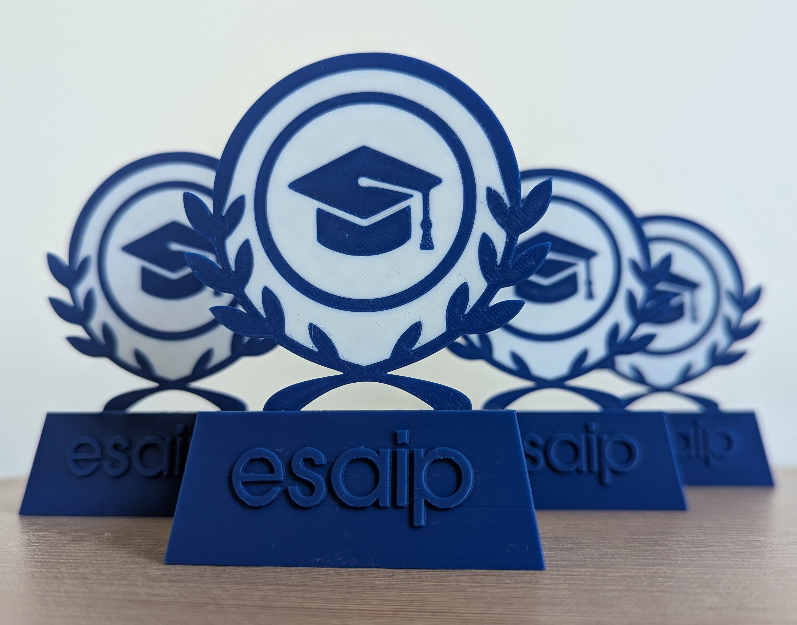

Présider & innover
De retour d’Erasmus, je prends la tête d’Innov’Lab en tant que président. Ce rôle m’amène à structurer, relancer et enrichir les activités de l’association, tout en portant une vision nouvelle de l’innovation partagée. Retour sur cette année intense.

🧭 Un nouveau mandat, une nouvelle impulsion 🧭
Fraîchement rentré de Finlande, j’ai repris la tête d’Innov’Lab dans un contexte exigeant. La première mission fut la passation avec le bureau précédent, puis l’organisation d’une réunion de démarrage avec les responsables de chaque pôle. Nous avons mis en place un fonctionnement plus rigoureux, avec des réunions de bureau en petit comité pour assurer le suivi des projets, du matériel et des finances.
✏️ Identité visuelle et communication ✏️
L’un des chantiers majeurs de cette année a été la refonte complète de l’identité visuelle d’Innov’Lab. Pour cela, nous avons fait appel à une graphiste professionnelle, afin de concevoir une charte graphique cohérente, moderne et fidèle à nos valeurs. Cette nouvelle identité s’est traduite par des visuels harmonisés et une bannière officielle, pensée pour nos présentations et nos stands.
🔧 Des projets étudiants et solidaires 🔧
Cette année a été marquée par plusieurs projets, certains nouveaux, d’autres relancés :
- ♻️ Recycleur de bouteilles ♻️ : Nous avons lancé un nouveau projet de recycleur de plastique, dans l’objectif à terme de produire du filament réutilisable pour nos imprimantes 3D. Cette première phase s’est concentrée sur le démontage complet d’une imprimante Creality Ender 3, dont nous avons extrait moteurs, tiges filetées, roulements et cartes pour les réintégrer dans un système de découpe, d'extrusion ou de bobinage. Parallèlement, nous avons débuté la modélisation 3D des futures pièces mécaniques, en anticipant les contraintes liées à la fusion du plastique.
- 🕹️ Refonte des bornes d’arcade 🕹️ : Après la remise en état technique réalisée l’an passé (rétrofit complet, remplacement du Raspberry Pi, nouvelle interface logicielle), nous avons poursuivi cette année le projet des bornes d’arcade, en nous concentrant principalement sur la dimension artistique et visuelle. Cela a impliqué le ponçage minutieux, la préparation des surfaces, puis la réflexion autour d’un nouvel habillage graphique cohérent avec l’univers d’Innov’Lab. Le design s’inspire du rétro gaming et de l'esthétique futuriste de notre charte graphique.
- 🧠 Cours d’initiation à la modélisation et à l’impression 3D 🧠 : Dans une volonté de transmission des compétences, j’ai animé plusieurs séances d’initiation à Fusion 360, destinées aux membres de l’association souhaitant apprendre à modéliser leurs propres objets. Les cours couvraient les notions de base : esquisse, extrusion, assemblage, mais aussi des astuces de conception adaptées à l’impression 3D FDM. Ces formations avaient pour but de favoriser l’autonomie et de démocratiser l'accès aux outils numériques de fabrication.
-
🖥️ Récupération de matériel informatique 🖥️ : Lors des travaux de rénovation d’un bâtiment de l’ESAIP, l’école a souhaité se débarrasser d’environ quarante postes informatiques complets (unités centrales, écrans, claviers et souris). Grâce à un partenariat entre Innov’Lab et l’administration, nous avons pu récupérer l’ensemble de ce matériel. Nous l’avons ensuite testé, nettoyé et remis en état (changement de composants défectueux, réinstallation de systèmes d’exploitation légers). L’objectif : proposer ces équipements à très bas prix aux étudiants qui en avaient besoin, tout en luttant contre le gaspillage électronique.

Matériel récupéré lors des travaux de l’ESAIP. -
🏆 Trophées de la remise de diplôme 🏆 : Nous avons également conçu et fabriqué les trophées de la remise de diplômes ESAIP 2025, remis aux majors de promotion et aux intervenants lors de la cérémonie officielle. La démarche a été menée de A à Z : design personnalisé, modélisation en 3D avec intégration du logo ESAIP et des couleurs de l’école, puis impression en haute qualité avec post-traitement manuel. Ces trophées ont été très bien accueillis pour leur esthétique sobre et moderne, et leur forte valeur symbolique.

Trophées personnalisés pour la remise de diplôme 2025, modélisés et imprimés par Innov’LAB.
🎉 Une vie associative dynamique 🎉
Au-delà des projets techniques, nous avons accordé une place importante à la cohésion de groupe et à la vie associative. Pour renforcer les liens entre les membres, nous avons organisé une soirée raclette à l’ESEP, ouverte à tous les membres ainsi qu’à leurs amis. Ce moment convivial a permis à chacun de se retrouver dans une ambiance détendue, hors du cadre des projets. En décembre, un Secret Santa a également été mis en place, avec une participation enthousiaste et de nombreuses attentions personnalisées. Ces initiatives ont grandement contribué à créer un esprit d’équipe soudé, basé sur la bienveillance, la collaboration et le plaisir de faire ensemble.
🛠️ Vers un FabLab à l'ESAIP 🛠️
Parmi les ambitions phares de cette année, nous avons lancé les premières démarches pour la création d’un FabLab ouvert à tous les étudiants de l’ESAIP. Ce lieu, dédié à la fabrication numérique, à l’expérimentation et à l’innovation libre, serait entièrement animé et géré par les membres d’Innov’Lab. Au-delà d’un simple espace technique, le FabLab incarne une volonté profonde : offrir à chacun un cadre pour apprendre, créer, collaborer et innover durablement au sein de l’école.
Cette année de présidence, aussi exigeante qu’enrichissante, m’a permis de développer des compétences stratégiques, organisationnelles et humaines, tout en poursuivant une mission qui me tient particulièrement à cœur : rendre l’innovation accessible, concrète et réellement partagée.